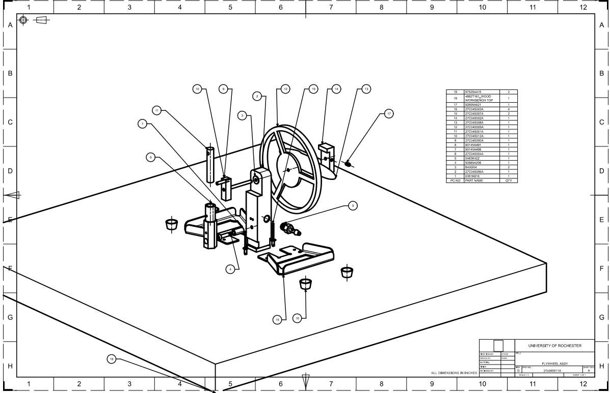
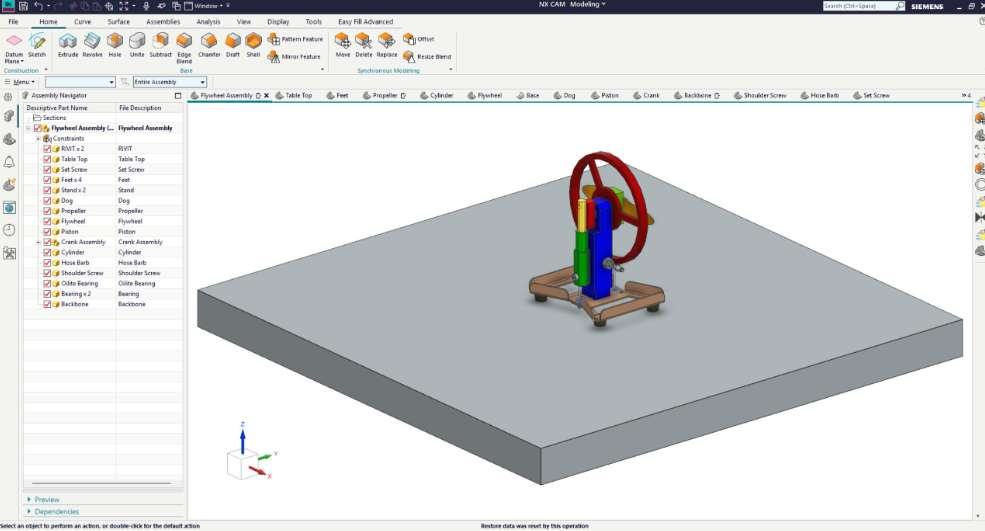
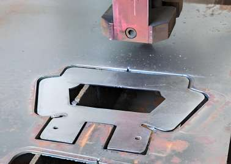
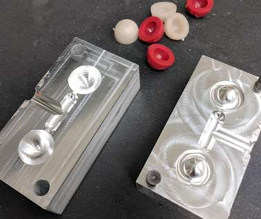
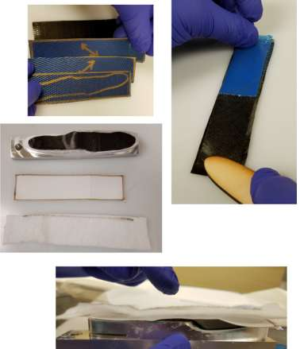
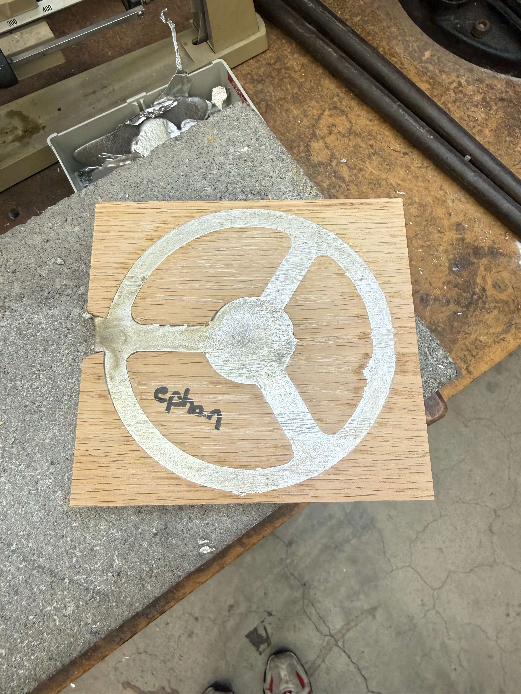
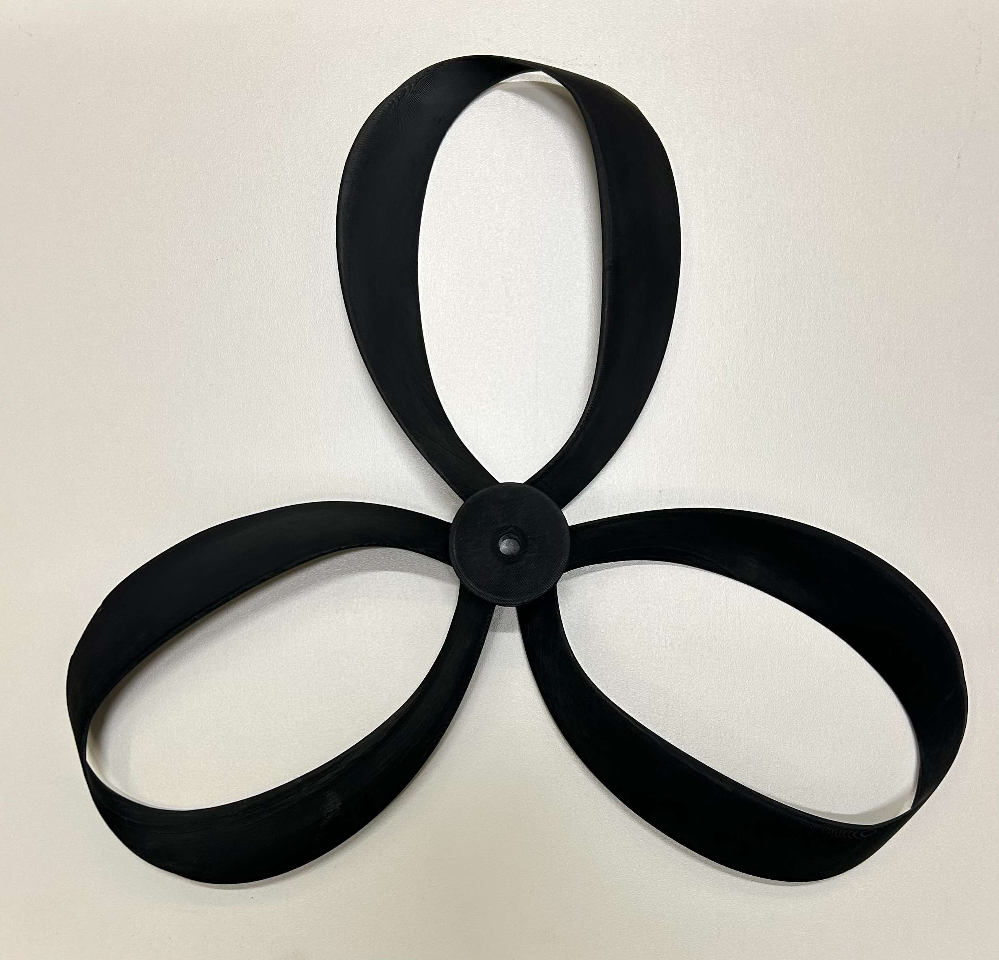
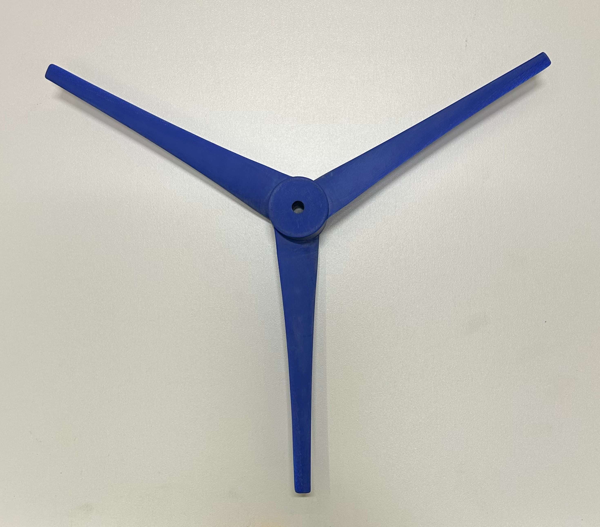
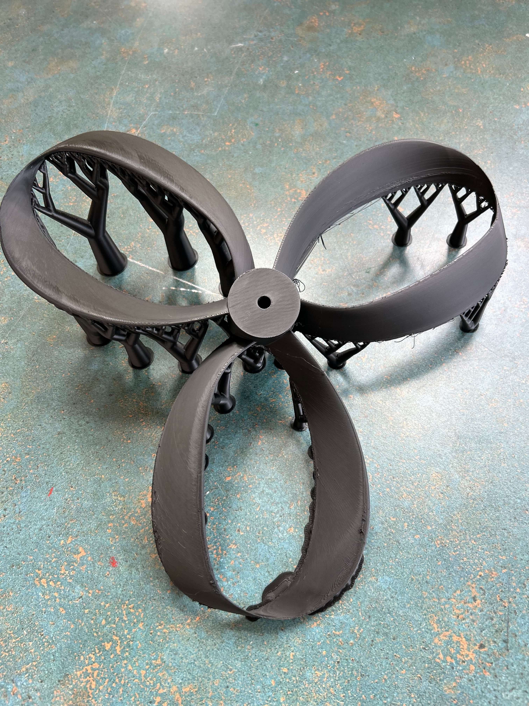
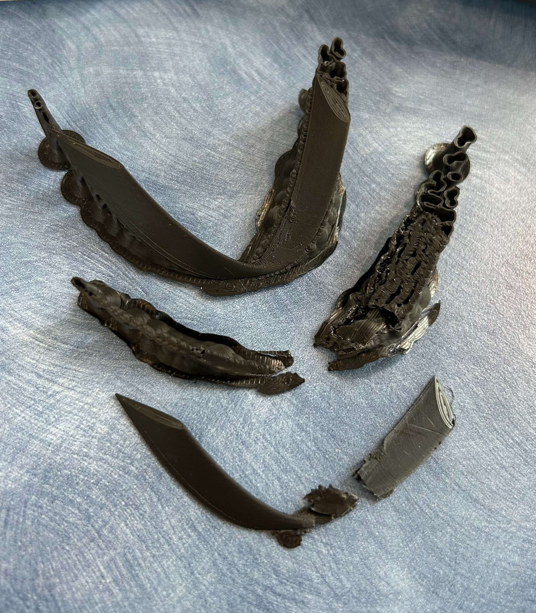

Projects


Flywheel Manufacturing
A flywheel uses the conservation of angular momentum to store rotational energy by converting incoming power into rotational kinetic energy and keeping it stored as momentum. I am building this to test a flywheel's energy storage capacity and to explore the effects of different materials and manufacturing techniques on its performance. This project is unique in the sense that I am designing and manufacturing the flywheel from scratch, including the selection of materials, the design of the geometry, and the fabrication process. The goal is to create a flywheel that can store a significant amount of energy while maintaining structural integrity and safety.
Part of ME 204 Mechanical Design, I am designing, machining, and casting a flywheel air engine to practice the fundamentals on how manufacturing choices impact its operational parameters. (Ongoing Project)


Overview
Every part of the flywheel -- the wheel, stand, feet, dog, propeller, crank, cylinder, and backbone -- was manufactured by me using several different processes, which let me compare how each one affected mass distribution, balance, and strength. The wheel was pewter cast to concentrate mass at the rim and maximize rotational inertia, the stand was CNC machined for tight tolerances on the bearing bore, and the feet were injection molded for repeatable, low-cost production. The final stored energy will be tested at a specific RPM in order to quantify how the design performed.




Approach
I modeled the flywheel in SolidWorks and ran Siemens simulations to predict rotational imbalance before committing to manufacturing to ensure that there was no significant off-center mass distribution at speed that would translate into bearing wear and vibration. After machining and casting each component, I balanced the assembly and reduced measured imbalance by through iterative material removal at the rim. The biggest lesson from machining especially was how much manufacturing tolerance compounds across a multi-process build, and how important it is for an engineer to consider the cumulative effect of these tolerances by actually building the parts themselves. This is an ongoing project that is still being worked upon; final results will be available soon.

Water Hammer Test Rig
A test rig that simulates water hammer events in a controlled lab space. The rig is able to generate water hammer events by rapidly closing a valve, and is equipped with pressure sensors to measure the resulting pressure spikes. The data collected from these tests verifies the mechanical resistance of components and/or assemblies to water hammer generated by a hydraulic circuit under pressure. Mainly used on components intended for use in the DHW applications (Domestic Hot Water).
Testing and characterization of pumps is essential for ensuring their reliability and performance in real-world applications.
How it works
A Calpeda multistage pump pressurizes the loop, and the test sample sits about 8 m downstream through 16 mm tubing so that it's far enough that the pressure wave has room to develop before it reaches the gauges. Closing the ball valve rapidly stops flow and sends a pressure spike back, which a Keller sensor (rated to 50 bar, sampling at 5 kHz) and a PT100 probe capture it. A Caleffi water hammer arrestor and an air valve in the loop keep the surge contained to the test sample instead of the rest of the lab's plumbing, and a 100 L tank with a 1.5 kW heater lets the rig run hot-water trials representative of domestic hot water (DHW) use. The resulting pressure-time data is what's used to verify how much water hammer a given pump or assembly can withstand before it fails.
My role
I designed this rig and worked with technicians to size the pump, valve, and sensor package, as well as laying out the piping and instrumentation schematic the lab uses to build and run it. By the time my internship ended, the rig was fully built and the schematic was validated, but I wasn't able to run the actual pump qualification tests myself before I left; that testing picked up after my internship ended. The part of this I'm proudest of is documenting the test rig carefully, with enough detail, for someone else to run without me there.
Toroidal Wind Turbine
A team research project comparing toroidal and conventional curved wind turbine blades for residential use, testing whether a closed-loop geometry borrowed from quiet marine propellers can match a conventional blade's power output. Both blades shared the same NACA 0018 airfoil and were 3D-printed and tested indoors across four wind speeds. Against our own hypothesis, the toroidal blades came out significantly more power-efficient at every speed tested, with competitive acoustic performance once noise was normalized against power output.
"Ever Better Blades" is a five-person team project (ME 241: Mechanics Lab) testing whether toroidal, closed-loop turbine blades, already used to quiet marine propellers, can hold their own against a conventional curved blade for residential wind power, on both efficiency and noise.




Overview
Residential wind turbines almost always use a curved blade, but toroidal, closed-loop blades are already gaining ground in marine propeller design for their quieter, more stable performance. Our team set out to see whether that geometry translates to a land-based turbine. We designed both blades around the same NACA 0018 airfoil and matched rotor diameter (356.5 mm) so the comparison isolated geometry rather than scale: I worked on the toroidal blade's CAD in Siemens NX and Onshape, while the curved baseline was generated in QBlade using Schmitz optimization. Both were 3D-printed in PLA on a Bambu Lab H2D printer -- the toroidal blade's more complex geometry took nearly 12 hours to print and came out noticeably heavier (3.75 oz vs. 2.25 oz) with roughly 12x the moment of inertia of the curved blade, a byproduct of the shapes rather than a design choice.
We tested both blades indoors with a leaf blower and cardboard nozzle for uniform airflow across four wind speeds (4.25–9.68 m/s), using a Hall-effect sensor and Arduino to track rotor RPM and a microphone with time-domain background subtraction to isolate blade noise from motor noise.
Results
The results went against our own hypothesis. Based on the marine literature, we'd predicted the toroidal blades would be about 15% less power-efficient than the curved blades, trading some output for quieter operation. Instead, the toroidal blades were significantly more efficient at every wind speed we tested, and consistently reached a higher tip-speed ratio, meaning they spun faster relative to the incoming wind. On acoustics, the toroidal blades were louder at the same wind speed (5.5–8.7 dB), but that gap tracked almost entirely with RPM: the toroidal blades simply spun about 50% faster at a given wind speed. Once we normalized sound by power output per unit airflow, the toroidal blade was competitive across the board and measured roughly 10% quieter than the curved blade at our highest tested speed, though with overlapping uncertainty bands we're careful to call that a trend.
Limitations & what's next
The comparison wasn't perfectly matched: the two blade designs ended up with different surface areas, our wooden test tower wasn't fully damped against vibration, and our microphone wasn't calibrated to an absolute pressure reference, so our sound levels are relative rather than directly comparable to published data. The full methodology, uncertainty analysis, and our recommendations for a fairer follow-up test (a calibrated microphone, a matched-surface-area curved blade, and a cost comparison) are in the final report, linked above.


Thermal Energy Storage (TES) Model and CFDs
CFD models of various thermal energy storage tanks simulated to predict how they will perform for data center cooling loads before they're sold to customers. The technically interesting part is relating the transient thermal model to customer performance numbers; the simulation has to be accurate, and it has to be fast enough to run a sweep across multiple flow rates and ambient conditions so the customer can see how the tank will perform in their specific application.
CFD analysis of the thermal performance of thermal energy storage (TES) tanks for data center cooling.
What I did
I ran transient CFD models of TES tanks in STAR-CCM+ and Luminary AI and set up a cloud-based parameter sweep to evaluate performance across a range of flow rates and ambient conditions. The model tracked thermal stratification inside the tank over a full charge/discharge cycle so the results could be compared directly against the system's cooling requirements. Additionally, I owned a parameterized model that allowed for rapid evaluation of different design configurations in SolidWorks.
Learning how to use AI as an engineer
Running this parameter sweep the traditional way, one STAR-CCM+ case at a time, each one meshed and solved individually, would have made it impractical to cover more than a couple of flow rate and ambient temperature combinations before a deadline (and especially in only a couple months within my internship span). Using Luminary AI's cloud-based solver let me run dozens of configurations in parallel instead of sequentially, which is what actually made a sweep possible rather than a single estimate. I think that's where AI is becoming necessary for engineers generally; it doesn't replace the engineering judgment of setting up the physics, boundary conditions, and mesh in the first place, but it removes the computational bottleneck that would otherwise force us to test less than we can.
That speed only matters if the results can be trusted, though. I treated every AI accelerated run the way I'd treat any simulation result that didn't converge. My manager and I spot-checked a subset of the Luminary AI cases against matching STAR-CCM+ runs solved the conventional way, confirmed the thermal trends, and only released numbers to customers once they'd cleared that check. Faster tools raise the bar on verification only if the engineer is still the one who has to catch a model that converged to the wrong answer "confidently." This is a developing, one of a kind skill to learn as we inch towards a smarter, quicker world.


Self-Sensing Test Loop
This loop is designed to test the self-sensing capabilities of a new type of sensor utilized at my internship. The loop allows for controlled flow conditions and can be configured in various ways to simulate different scenarios. Data collected includes flow rate and pressure measurements, which are used to evaluate the accuracy and reliability of the self-sensing technology.
A closed-loop test rig for evaluating the self-sensing capabilities of a new type of sensor used at my internship.
Design
The loop began as a SolidWorks CAD model. It provides controlled flow conditions and can be configured in different ways, such as the parallel flow arrangement above, to simulate different scenarios. Hardware includes a flow meter and custom flanges, which I verified with FEA for ASME compliance. The construction was relatively simple: PVC schedule 80 pipes, nipples, valves, vents, and custom freedom flanges to remove and add different in-line pumps. I constructed the single flow configuration, and designed the next test rig for parallel flow, but due to the end of my internship I was not able to construct the final test loop. I had to consider how technicians would interact with the system, and worked closely with the industrial engineering team to ensure usability and safety.
What it measures
Flow rate and pressure measurements are collected from the loop and used to evaluate the accuracy and reliability of the self-sensing technology. At Taco Inc., new programmable logic controllers (PLC's) were being integrated with the test rig to automate data collection and analysis. I was responsible for working with the technicians to ensure proper operation and maintenance of the system after construction, including taking training lessons on WEG variable frequency drives (VFDs).